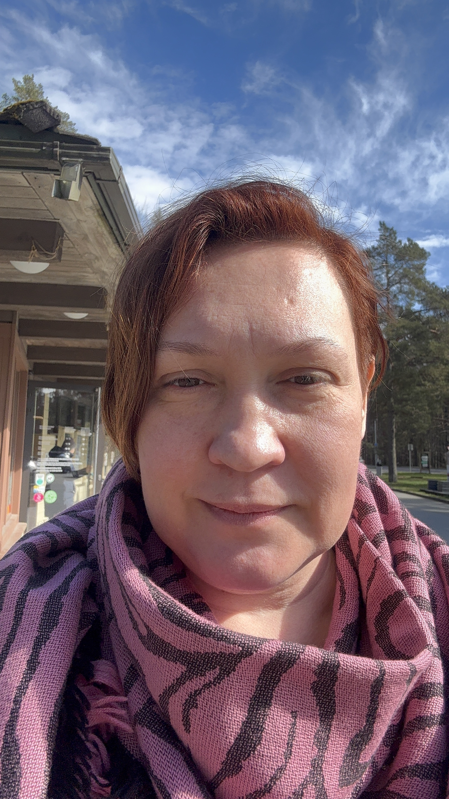

Сертифицированный практик и фасилитатор международной системы Access Consciousness
Приветствую вас! Я помогаю людям снимать внутренние ограничения, убирать ментальный шум и открывать новые возможности во всех сферах жизни. Моя цель — показать вам, сколько легкости, свободы и чистой радости может быть в вашей повседневной реальности.
Это сертифицированный однодневный интенсив, на котором вы с нуля освоите международную методику работы с 32 энергетическими точками на голове. Тренинг на 100% практический: вы дважды получите сессию Баров и дважды сделаете её самостоятельно под моим руководством.
Вы получите официальное международное руководство, схемы точек и именной международный диплом практика, дающий право официально проводить сессии в 170 странах мира — как для близких, так и платно для клиентов.
Часовая глубокая индивидуальная работа, полностью адаптированная под ваш личный запрос (деньги, здоровье, отношения, карьера или выход из кризиса). Комбинация телесных процессов и вербальной фасилитации позволяет точечно распутать узлы ограничений в вашем теле и сознании.
Вы разгружаете нервную систему, избавляетесь от многолетнего стресса и выходите из кабинета с кристально чистым умом, чувством тотального облегчения и готовыми инсайтами.
Access Consciousness («Доступ к Осознанности») — это всемирная динамическая система практических инструментов, телесных процессов и вербальных техник. Её главная цель — расширить возможности человека, помочь ему убрать ментальный шум, вернуть веру в себя и начать создавать жизнь из легкости, радости и великолепия.
В отличие от классических подходов, которые ищут фиксированные ответы и копаются в причинах проблем, Access использует силу открытых вопросов. Вопросы вроде «Что еще здесь возможно?» или «Как может быть еще лучше?» мгновенно обходят логические барьеры ума и открывают новые энергетические возможности, которые вы раньше просто не замечали.
Эта модальность не навязывает вам чужие правила. Её главный девиз: «Расширение возможностей людей знать то, что они знают». Узнать больше можно на официальном сайте: Access Consciousness Website.
Access Bars® (Аксесс Бары) — это международная методика глубокого расслабления и очищения ума, которая позволяет избавиться от многолетнего ментального груза, стресса и ограничивающих установок всего за одну сессию. На нашей голове расположены 32 уникальные точки (бары), каждая из которых напрямую связана с определенной сферой человеческой жизни: деньгами, контролем, творчеством, телом, радостью, покоем, коммуникацией и надеждами.
Во время сессии вы лежите на кушетке и расслабляетесь, пока практик мягко, без давления прикасается к этим 32 точкам на вашей голове. В этот момент запускается процесс разрядки электромагнитного напряжения, накопленного в коре головного мозга в результате ваших мыслей, страхов, обид и чужих убеждений.
Это работает в точности как очистка жесткого диска вашего компьютера: сессия Баров стирает застарелые, ненужные, «зависающие» программы и спам, которые годами блокировали ваше развитие и заставляли вас ходить по кругу. Вы освобождаете колоссальное пространство внутри себя для того, чтобы начать создавать свою реальность из легкости, осознанности и радости.
Как говорят основатели методики: «В самом худшем случае после сессии вы почувствуете, что вам сделали лучший расслабряющий массаж в вашей жизни. В самом лучшем случае — полностью изменится вся ваша реальность».
Access Energetic Facelift® (Энергетический Фейслифтинг) — это мощный, глубокий телесный процесс Access Consciousness, который не просто омолаживает лицо, но и запускает процессы интенсивной регенерации и восстановления клеток всего организма.
Этот метод кардинально отличается от привычных бьюти-процедур. Здесь не используются уколы, chemical пилинги, кремы или инвазивная аппаратура. Всё преображение происходит исключительно за счет бережного взаимодействия с естественными энергетическими потоками вашего тела.
Во время сессии вы отдыхаете, лежа на кушетке. Практик использует мягкие, нежные и питательные прикосновения ладоней, двигаясь снизу вверх от зоны декольте и шеи к лицу и голове.
В этот момент активируются более 30 уникальных космических и земных энергий, которые запускают клеточную память вашего тела. Главный секрет старения — это наши суждения о нем. Каждый раз, когда мы смотрим в зеркало и думаем: «Я старею, здесь появились морщины, кожа увядает», клетки нашего тела послушно «запечатывают» эти мысли в физическую реальность.
Energetic Facelift бережно стирает из памяти клеток все ваши и чужие суждения о возрасте, старении, внешности, генетике и болезнях. Клетки расслабляются, возвращаются в свое первозданное, здоровое состояние и начинают функционировать так же активно, как в юности.
Замечено, что эффект от сессий является накопительным. Прохождение курса из 20 сессий способно зафиксировать этот результат на долгие годы, запускающий необратимые процессы омоложения, которые видны всем окружающим.
Свяжитесь со мной напрямую, чтобы задать вопрос, записаться на сессию или забронировать место на тренинг.